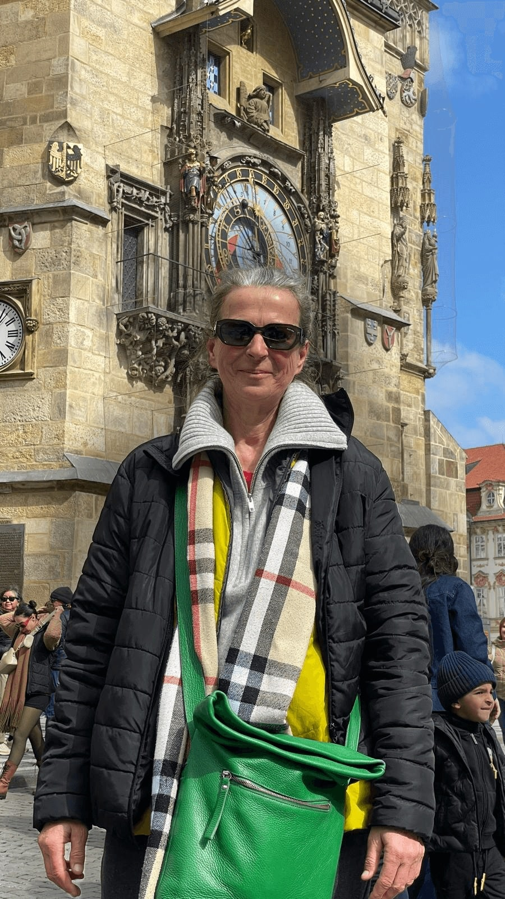
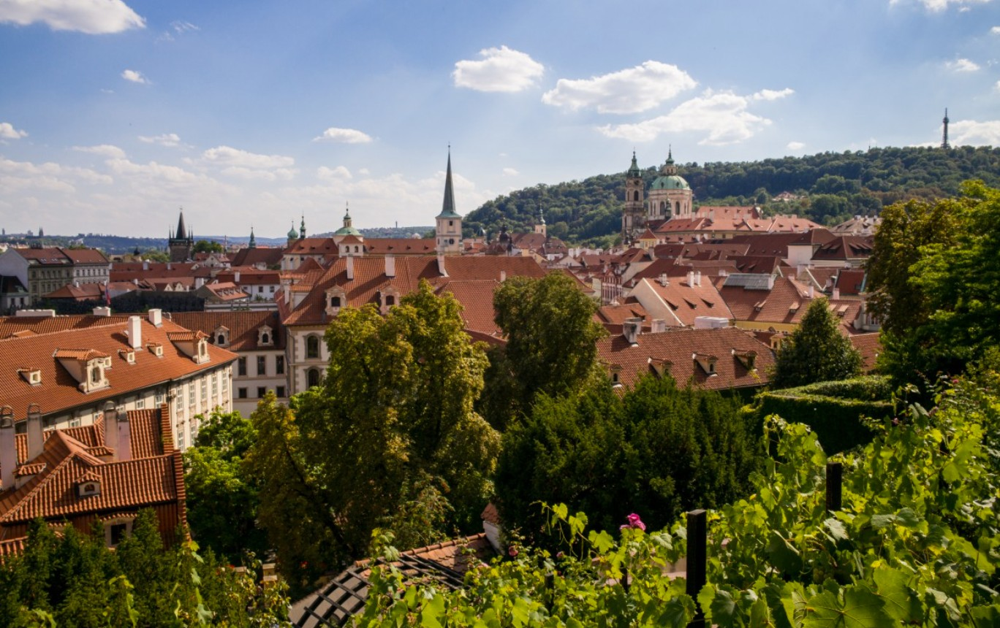

Der Waldstein-Garten in Prag: Tropfsteinwand, Pfauen und ein Garten des Senats
Hinter einer Mauer in der Kleinseite liegt einer der ältesten Barockgärten Mitteleuropas. Der Eintritt ist frei, und trotzdem gehen die meisten Prag-Besucher daran vorbei. Hier steht, was Sie dort sehen, in welcher Reihenfolge und wann der Garten offen ist.


Ich bringe fast jede Gruppe hierher, die mit mir durch die Kleinseite geht, meist als Pause zwischen Burg und Karlsbrücke. Die Reaktion ist immer ähnlich: Man tritt durch ein unscheinbares Tor und steht plötzlich in einem italienischen Garten, mit weißen Statuen, Hecken wie Wände und Pfauen, die über den Kies laufen. Danach stellt man sich vor eine Mauer voller Fratzen, dreht sich um und blickt auf den Sitz des tschechischen Senats.
In diesem Artikel
Wallenstein und sein Garten
Albrecht von Wallenstein, auf Tschechisch Albrecht z Valdštejna, stieg im Dreißigjährigen Krieg zu einem der mächtigsten Feldherren Europas auf. Zwischen 1623 und 1630 ließ er sich in der Kleinseite einen Palast bauen, der mit der Burg oben auf dem Hügel konkurrieren sollte. Dafür ließ er 23 Häuser, drei Gärten und eine Ziegelei abreißen. Die Nachbarn wurden nicht gefragt.
Die italienischen Architekten Andrea Spezza und Niccolò Sebregondi legten einen Garten an, wie man ihn so weit nördlich der Alpen kaum kannte: streng geometrisch, mit Sichtachsen, Statuen und künstlicher Grotte. Wallenstein selbst genoss ihn nicht lange. 1634 wurde er in Eger (Cheb) ermordet.
Seit 1993 ist der Waldstein-Palast Sitz des Senats der Tschechischen Republik. Für Besucher ist das ein Glück: Die Hecken sind tadellos geschnitten, das Parterre wird jede Saison neu bepflanzt, und im Sommer finden hier gelegentlich Konzerte statt, die ebenfalls frei zugänglich sind.
Mein Rundgang in fünf Stationen
Der Garten ist nicht groß, aber er ist in Räume geteilt, und wer ohne Plan hineingeht, verpasst oft das Merkwürdigste. So führe ich meine Gäste, vom Eingang Letenská aus.
1. Das Hauptparterre. Gehen Sie zuerst die lange Achse mit den Bronzestatuen ab. Erst von hier aus verstehen Sie die Größe der Anlage und wie bewusst sie auf den Palast ausgerichtet ist. Achten Sie auf die Pfauen, darunter meist auch ein weißer. Sie gehören seit langem zum Garten und sind an Menschen gewöhnt.
2. Die Sala terrena. Die große offene Loggia mit drei Bögen am Ende des Parterres ist mit Fresken aus der griechischen Mythologie ausgemalt: Götter des Olymp und Szenen aus dem Trojanischen Krieg. Kein Museum, keine Absperrung, nur offene Bögen zum Garten hin.
3. Der Teich. Rechts davon liegt der große Teich mit der Herkules-Statue auf der Insel in der Mitte. Von hier haben Sie den bekannten Blick über den Garten hinauf zur Burg.
4. Die Tropfsteinwand. Am Rand des Gartens steht eine lange künstliche Grottenwand, auf Tschechisch krápníková stěna. Echte Tropfsteine sind es nicht, sondern eine manieristische Fantasie aus Stuck und Kalktuff, in der Sie bei längerem Hinsehen Fratzen, Schlangen, Eulen und Tierköpfe entdecken. Solche Grotten sollten im 17. Jahrhundert die wilde Natur zeigen, als Gegensatz zu den geschnittenen Hecken ringsum. Kinder finden hier meist mehr Gesichter als Erwachsene.
5. Die Voliere. Gleich neben der Grotte steht die historische Voliere, in deren Mauerwerk derselbe Stil weitergeht wie in der Tropfsteinwand. Heute leben darin Uhus, die tagsüber meist reglos auf ihren Ästen sitzen.

Die echten Bronzen stehen in Schweden
Die Statuen im Garten sind Kopien. Die Originale schuf Adriaen de Vries, ein niederländischer Bildhauer, der auch für Kaiser Rudolf II. arbeitete. 1648, in den letzten Monaten des Dreißigjährigen Krieges, besetzten schwedische Truppen die Kleinseite und nahmen die Bronzen als Kriegsbeute mit. Sie stehen bis heute im Park von Schloss Drottningholm bei Stockholm.
Die Abgüsse im Garten entstanden im 20. Jahrhundert und folgen den Originalen genau. Ich erzähle die Geschichte trotzdem gern, weil sie zeigt, wie viel Prag in diesem Krieg verloren hat. Weitere Prager Orte, an denen Geschichte passiert ist, finden Sie im Artikel Zehn Orte mit Geschichte.
Praktisches für Ihren Besuch
Der Waldstein-Garten passt gut zwischen die Burg und die Karlsbrücke. Wer von der Burg über die Alte Schlossstiege herunterkommt, ist in fünf Minuten am Eingang Letenská. Danach liegen die Gärten unter der Prager Burg und die stillen Ecken aus dem Artikel Kleinseite bis Karlsbrücke: Geheimtipps gleich um die Ecke. Wer früh am Tag oben anfangen möchte, beginnt im Strahov-Kloster.
Häufige Fragen
Kostet der Waldstein-Garten Eintritt?
Nein, der Garten ist während der Saison kostenlos zugänglich.
Ist der Garten im Winter geöffnet?
Nein. Von November bis März ist er geschlossen. Im Winter empfehle ich stattdessen die Ideen aus Prag im Winter.
Kann man den Waldstein-Palast besichtigen?
Die Räume des Senats sind an ausgewählten Tagen, meist am Wochenende, zugänglich. Die Termine veröffentlicht der Senat auf seiner Website.
Sind die Pfauen immer da?
Fast immer während der Saison. Bitte nicht füttern.
Wo genau ist die Tropfsteinwand?
An der Gartenmauer seitlich des Hauptparterres, neben der Voliere.
Quellen und offizielle Seiten
- Senát Parlamentu České republiky: Öffnungszeiten von Garten und Palast
- Ladislav Hoskovec, botany.cz: Valdštejnská zahrada (botanische und historische Details)